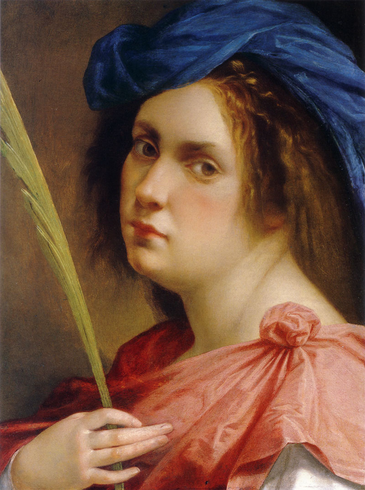

Susanna i els vells
Galeria
Formulari
Creador
Inici
Descripció
Susana i els vells és un quadre de la pintora italiana Artemisia Gentileschi. Va ser executat en 1610. Es tracta d'una pintura a l'oli sobre llenç, que mesura 170 cm d'alt i 121 cm d'ample. Actualment es conserva al Castell de Weissenstein de Pommersfelden (Alemanya). Rubens va inventar un nou tipus d'escena que va definir com ni sacra ni profana, encara que el tema es prengués de la Bíblia. Exemples típics d'aquest tipus d'escena són Agar o Susana i els vells. En aquesta versió del tema, elaborat per Artemisia Gentileschi, el gest d'un dels vells, que silencia a Susana portant-se el dit als llavis, apareix també en la pintura sobre el mateix tema de Rubens (Galeria Borghese, Roma).
Autor
Artemisia Lomi Gentileschi (Roma 8 de juliol de 1593 - Nàpols, cap a 1654) va ser una pintora barroca italiana, filla del pintor toscà Orazio Gentileschi (1563-1639). Va viure a la primera meitat del segle XVII. Va prendre del seu pare, Orazio, el límpid rigor del dibuix, i li va empeltar una forta accentuació dramàtica, presa de les obres de Caravaggio, carregada d'efectes teatrals, element estilístic que va contribuir a la difusió del caravaggisme a Nàpols, ciutat a la qual es traslladar en 1630.
Retrat d'Artemisia

Zoom obra